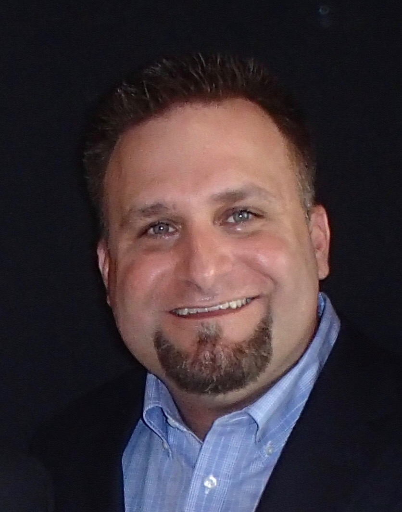

Matt Schulman

Summary
I am a Developer focusing on Network Automation. I have over 20 years experience in IT - Software Development, Unix System Administration, and Network Engineering.
Education
- Bacehelor's of Science in Management Information Systems from Belleve University
- Associate's Degree in Applied Computer Science from Community College of the Air Force
- Associate's Degree in Applied Electronics from Community College of the Air Force
Work Experience
Skills
- Python
- Ansible
- Agile/Scrum
- Cisco Routers/Switches
- Juniper Routes/Switches
- Linux System Administration
- Routing Protocols - BGP, EIGRP, OSPF
- First Hop Redundancy Protocols - HSRP, VRRP
- Technical Instruction
- Technical Writing
Certifications
- Cisco CCNP Enterprise
- Cisco DevNet Associate
- CISSP
Other